GUÍA PARA LA MATRÍCULA DE CUPOS EN EL PROGRAMA JOVEN INVESTIGADOR
Información de Control Documental
Código: VI-GU-10
Versión: 01 / 13-MAR-2024
Aviso legal institucional: La impresión o copia digital de este documento se considera "COPIA NO CONTROLADA". Solo se garantiza la actualización de la documentación en el sitio oficialhttp://www.udea.edu.co.
Contenido
- Definición
- Políticas
- Contenido
- 3.1. Usuarios que Intervienen
- 3.2. Proceso de ejecución del trámite
- 3.2.1. Ingresar a la aplicación SIIU
- 3.2.2. Ingreso al registro del cupo y el Plan de trabajo Joven Investigador – JI -
- 3.2.3. Pestaña Información General
- 3.2.4. Pestaña Descripción / Cronograma
- 3.2.5. Pestaña Presupuesto
- 3.2.6. Pestaña Plan de trabajo
- 3.2.7. Pestaña Participantes
- 3.2.8. Compromisos y Condiciones
- Nota de cambio
1. Definición
Este documento se ha elaborado con el fin de ayudar y capacitar a las personas que están interesadas en participar en la convocatoria al programa Joven Investigador de la Universidad de Antioquia, para lo cual deben ingresar el plan de trabajo en el Sistema Integrado de Información Universitaria: Investigación y Extensión - SIIU.
Dado lo anterior se aclara que esta guía no hace parte de la normativa universitaria y se debe utilizar como una herramienta que orienta el paso que se debe seguir en el aplicativo.
2. Políticas
Para inscribir un plan de trabajo en la convocatoria para Joven investigador UdeA, debe tener en cuenta los términos de referencia definidos por el CODI.
3. Contenido
3.1. Usuarios que Intervienen
- El Tutor del Joven investigador: es quien se encarga de la inscripción del plan de trabajo en el Sistema Integrado de Información Universitaria: Investigación y Extensión – SIIU.
- Vicerrectoría de Investigación: por medio de la plataforma, la Vicerrectoría revisa, avala y envía a los evaluadores la documentación correspondiente al plan de trabajo y procederá a su aprobación en el SIIU, para darle el inicio correspondiente.
3.2. Proceso de ejecución del trámite
3.2.1. Ingresar a la aplicación SIIU
El Tutor debe autenticarse en el portal de la Universidad de Antioquia (http://www.udea.edu.co), buscar la opción aplicaciones y entre ellas elegir el SIIU, así:
- Ingresa al portal de la Universidad:
http://www.udea.edu.co, en el encabezado seleccione Ingresar >> Iniciar sesión.
 Figura 1 - Ingreso a portal UdeA
Figura 1 - Ingreso a portal UdeA
- Saldrá la pantalla para iniciar sesión como usuario del portal, ingrese su usuario y contraseña y presione clic en el botón CONECTAR.
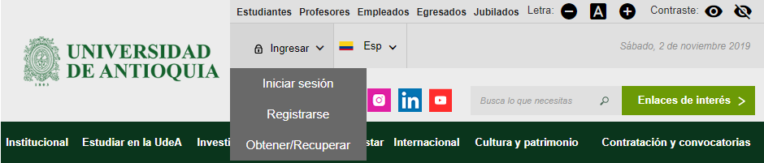
Figura 2 - Autenticación en el portal- Se abrirá una ventana con su nombre en la parte izquierda de la página, seleccione:
Enlaces de interés → Mis aplicaciones.
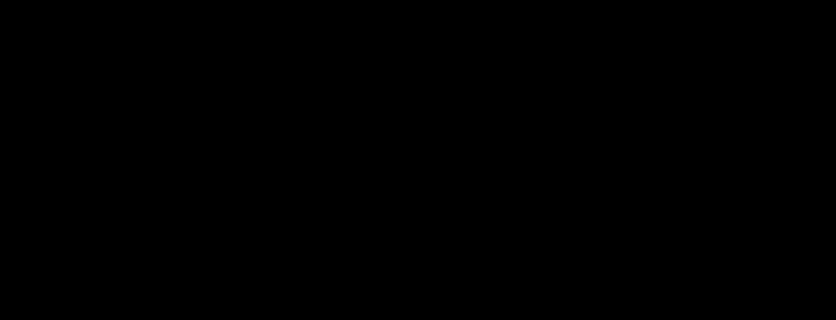
Figura 3 - Menú de acceso al Siiu- Se abrirá una ventana con las aplicaciones de la Universidad, seleccione SIIU.
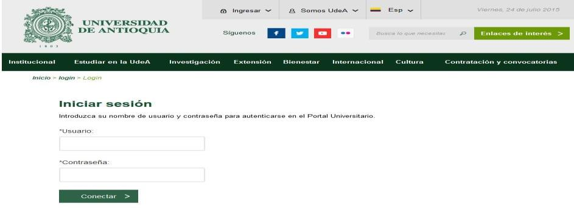
Figura 4 - Mis aplicaciones SIIU- Se debe abrir una nueva ventana con la aplicación SIIU en la que podrá iniciar el registro del cupo del joven investigador.
!!! tip "> Si la ventana no abre inmediatamente, es necesaria la configuración de ventanas emergentes en el navegador y seleccionar la opción que autorice el SIIU."
3.2.2. Ingreso al registro del cupo y el Plan de trabajo Joven Investigador – JI -
Estando en la aplicación del SIIU presione clic en el menú:
Convocatorias >> Nuevos Proyectos.
En esta ventana se inicia el ingreso de la información del cupo en el marco del cual el estudiante realizará las actividades de investigación (Plan de trabajo del estudiante).
> A lo largo de la aplicación usted encontrará la palabra proyecto; para el caso de los cupos de Joven Investigador usted realizará el proceso sobre las opciones de proyectos sin ningún inconveniente en la matrícula del cupo.
Figura 5 – Crear cupo JI por convocatoria
3.2.3. Pestaña Información General
Ingrese los datos para el cupo a matricular según la siguiente especificación:
| Campo | Detalle a registrar |
|---|---|
| Matrícula de | Subproyecto |
| Tipo de Subproyecto | Joven Investigador U. De A. |
| Tipo de proyecto | Investigación |
| Clasificación del proyecto | Básica o Aplicada |
| Seleccione check Convocatoria | Convocatoria |
| Convocatoria | Convocatoria vigente para Joven Investigador |
| Modalidad de financiación | Modalidad Única $6.960.000 |
| Grupo de investigación | Seleccione grupo de investigación al que pertenece el cupo |
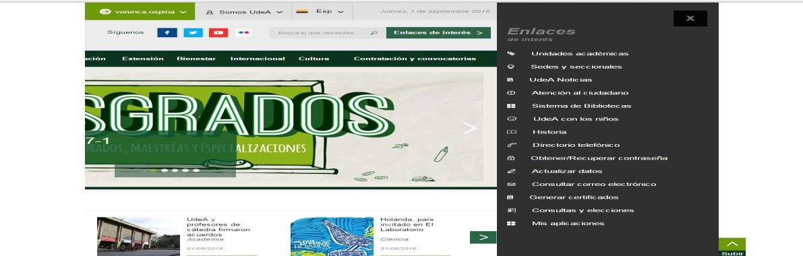
Figura 6 - Matrícula del cupoActive el botón Proyecto no registrado en Siiu. El sistema habilita los campos:
- Título de proyecto: Colocar Joven Investigador 2023
- Justificación: Colocar Joven Investigador 2023
- Centro administrativo: Vicerrectoría de Investigación
Figura 7 - Proyecto no registrado en SIIU
> La opción Requiere comité de bioética, NO SE ACTIVA, se deja por defecto apagada, ya que para la asignación del cupo no se requiere.
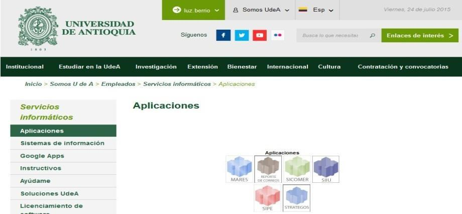
Figura 8 – Opción Requiere comité bioético se deja por defectoDefina el lugar donde se desarrollará la pasantía:
| Campo | Detalle |
|---|---|
| Nombre corto | Colocar Joven Investigador 2023 |
| Nombre completo | Colocar Joven Investigador 2023 |
| Palabras claves | Colocar Joven Investigador 2023 |
| Seccional | Medellín – Antioquia o la sede/seccional de la Universidad a la que pertenece el grupo o profesor de regiones |
| Lugar de ejecución | De la pasantía del estudiante (laboratorio, bloque, oficina) |
| Duración | Ingrese 12 meses |
Figura 9 - Nombre del proyecto y lugar de ejecución
- Presione clic en el botón GUARDAR.
- Verifique que en la parte superior el SIIU haya asignado el código al cupo y figure con estado “En elaboración”.
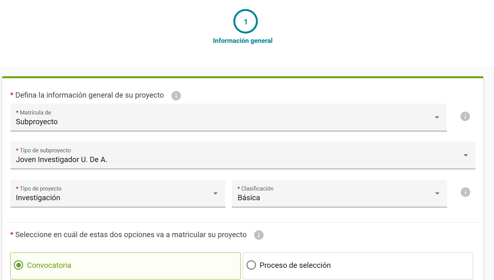
Figura 10 - Código y estado del cupo- Presione el botón Siguiente para pasar a Descripción Cronograma.
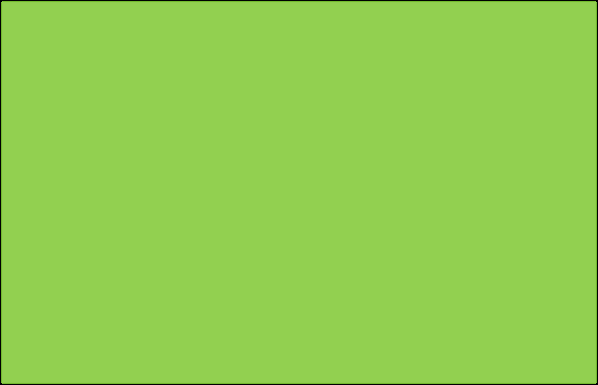
Figura 11 - Descripción CronogramaGuardado Parcial
Luego de guardar esta primera pestaña, podrá retomar el registro del cupo en cualquier momento antes de enviarlo a la Vicerrectoría.
Ruta para retomar:Convocatorias >> Proyectos en proceso> Ingrese el código en Palabra clave >> Consultar >> Columna Acciones (tres puntos) >> Editar.
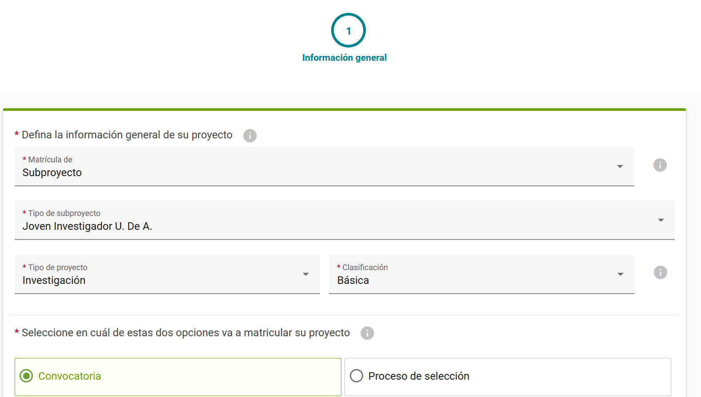
Figura 12 - Proyectos en procesoFigura 13 - Editar registro cupo
3.2.4. Pestaña Descripción / Cronograma
En esta pestaña encontrará dos subpestañas: Descripción y Cronograma.
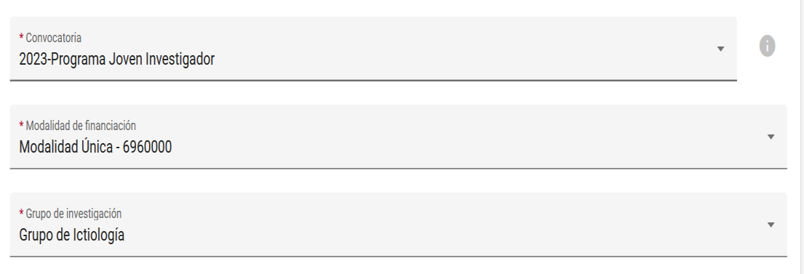
Figura 14 - Pestaña Descripción / CronogramaSubpestaña Descripción
- Ingrese el link del ORCID del Tutor (tramitado previamente en
https://orcid.org/) y el enlace al perfil de Google Scholar del grupo de investigación. - Tutorial ORCID:
http://biblioteca.uoc.edu/es/investigacion/como-puedes-obtener-el-codigo-orcid - Tutorial Google Scholar:
https://www.youtube.com/watch?v=ZvZUUYKRobc - Presione clic en los puntos a la izquierda del descriptor y presione Editar para abrir el editor de texto y colocar los enlaces.
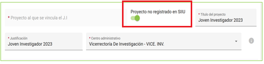
Figura 15 - Editar DescripciónFigura 16 - Edición Descripción
> No debe agregar otra descripción.
Subpestaña Cronograma
Registre únicamente las actividades de investigación, innovación y apoyo al grupo que asignará al estudiante, incluyendo las actividades de obligatorio cumplimiento.
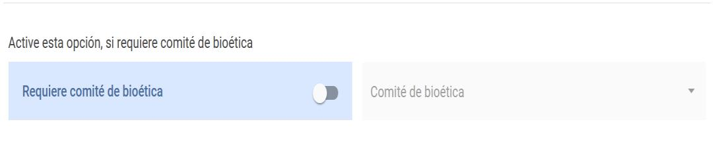
Figura 17 – Cronograma Actividades- Presione clic en Agregar actividad por cada una de las actividades a registrar.
- Complete: Actividad, Detalle, mes de Inicio y Fin (periodo meses Desde - Hasta).
- Presione el botón AGREGAR ACTIVIDAD.
Figura 18 - Agregar actividad
- Una vez ingresadas todas las actividades, revise el resumen presentado.
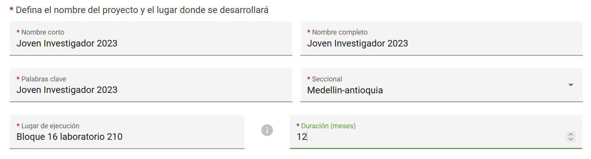
Figura 19 - Resumen con actividades creadas- Presione GUARDAR y SIGUIENTE.
3.2.5. Pestaña Presupuesto
Esta opción contiene dos subpestañas: Cofinanciadores y Presupuesto.
Figura 20 - Pestaña presupuestal
Subpestaña Cofinanciadores
> La pestaña cofinanciadores se deja tal como está, ya viene parametrizada en el SIIU. NO agregar más cofinanciadores. Solo presione clic en el botón GUARDAR.
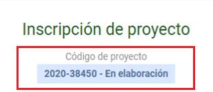
Figura 21 - CofinanciadoresSubpestaña Presupuesto
- Dé clic en AGREGAR RUBRO.
- Únicamente seleccione el ítem:
Programa Jóvenes Investigadores UdeA(no agregue otros rubros). - En el campo Justificación coloque:
Programa joven investigador.
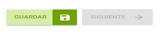
Figura 22 - Agregar rubro- Presione AGREGAR RUBRO e ingrese el valor total del convenio en la columna CODI: $6.960.000 (recuerde agregar los dos ceros de los decimales:
6960000.00). - En el campo Moneda elija COP, presione el botón Guardar y luego Siguiente.
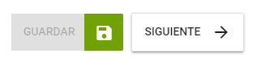
Figura 23 - Ingresar valores al presupuesto!!! warning "> No se agregan otros rubros ni tampoco más valores en CODI o en especie."
- Presione GUARDAR (verifique el mensaje Guardado exitoso) y presione SIGUIENTE.
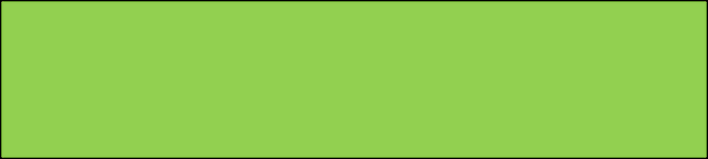
Figura 24 - Mensaje de almacenamiento3.2.6. Pestaña Plan de trabajo
Criterio CODI
Para la asignación de cupos por Grupo, el CODI conformará una comisión de tres investigadores (al menos uno por área del conocimiento), quienes revisarán la información registrada en el aplicativo SIIU y asignarán los cupos con base en la propuesta del plan de trabajo.
En esta pestaña se registran: - Actividades de formación en investigación: Debe incluir obligatoriamente: - Realizar un curso de formación virtual o presencial de los ofertados por la Agenda de Formación de Cultura Científica de la UdeA (mínimo 18 horas de asistencia). - Realizar una actividad de apropiación social del conocimiento o una actividad de difusión acorde con el Anexo 1 Actividades de obligatorio cumplimiento. - Actividades colectivas o de apoyo al Grupo.
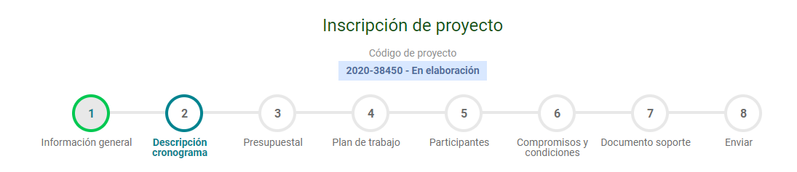
Figura 25 - Plan de trabajo- Dé clic en los tres puntos (Editar) para relacionarlas en el cuadro de texto.
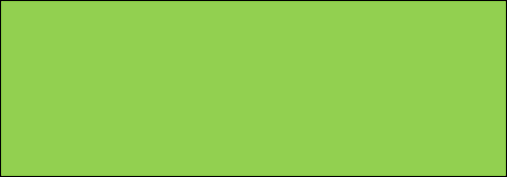
Figura 26 - Editar Actividades de apoyo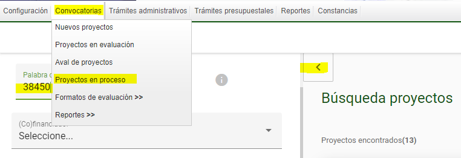
Figura 27 - Agregar actividades de apoyo- Presione el botón Cerrar y confirme el guardado seleccionando SÍ.
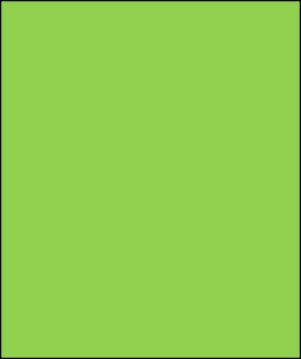
Figura 28 - Confirmación- Presione el botón Siguiente.
3.2.7. Pestaña Participantes
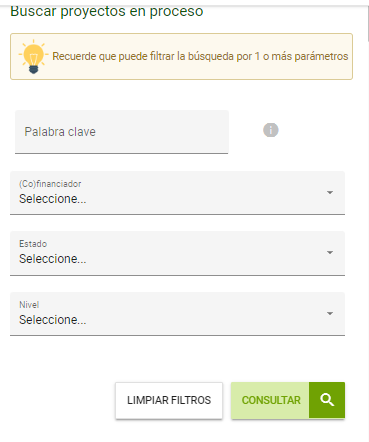
Figura 29 - Pestaña Participantes> Para los cupos únicamente se registra el participante tutor y el participante estudiante indeterminado.
A. Registro del Tutor
Requisitos del tutor: Debe ser un profesor de planta, ocasional o de cátedra con vínculo activo con la UdeA, que haga parte del equipo de investigación del proyecto (preferiblemente el IP) y no podrá estar en Comisión Administrativa.
- Clic en AGREGAR PARTICIPANTE >> SELECCIONAR PARTICIPANTE.
- Digite el número de cédula y presione BUSCAR. El SIIU traerá los datos automáticamente; dé clic en SELECCIONAR.
Figura 30 - Seleccionar participante tutor
- Presione SELECCIONAR INSTITUCIÓN y elija
890980040 - Universidad De Antioquia Vice. Inv.
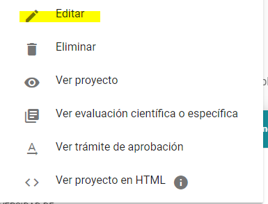
Figura 31 - Seleccionar institución- Presione BUSCAR GRUPO y elija el grupo de investigación correspondiente.
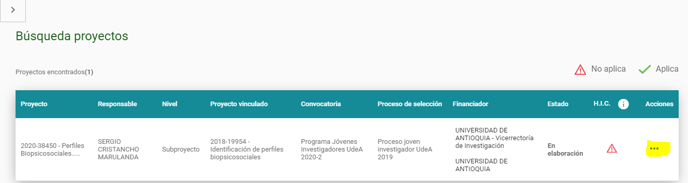
Figura 32 - Buscar Grupo del tutor- En vínculo UdeA seleccione el correspondiente (ej. Profesor - Regular/Planta), defina la dependencia y en Rol seleccione “Tutor”.
Figura 33 - Vínculo UdeA del tutor
- En dedicación, coloque el mismo número de horas a la semana tanto por fuera como por dentro del plan de trabajo (ej. 2h) y en duración 12 meses.
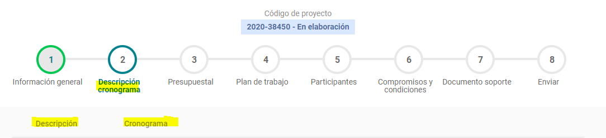
Figura 34 - Definición de horas y tiempo del tutor- En los campos Función y Observaciones digite
Tutor. Presione AGREGAR PARTICIPANTE.
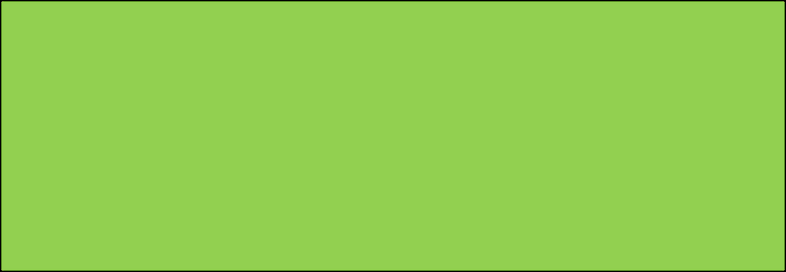
Figura 35 - Función y observaciones del participante- Presione GUARDAR y verifique el resumen en pantalla.
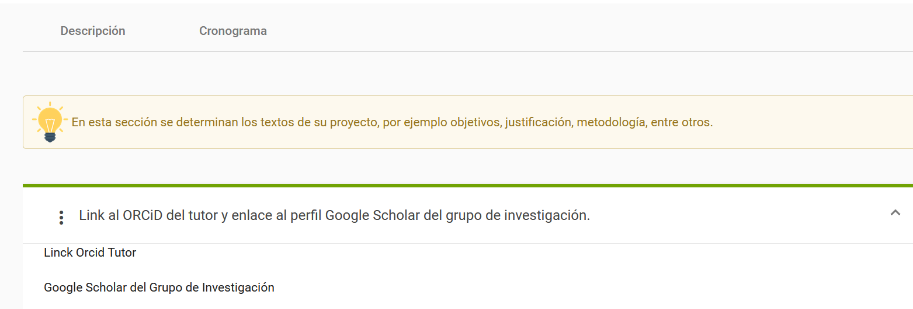
Figura 36 - Resumen de registro de participante TutorB. Registro del Joven Investigador (Indeterminado)
- Presione AGREGAR PARTICIPANTE. El participante aparece por defecto como Indeterminado.
(Inicialmente se deja como indeterminado; no se presiona "seleccionar participante" hasta no saber si se obtuvo el cupo). - Vaya directamente a SELECCIONAR INSTITUCIÓN (
Universidad de Antioquia Vice. Inv.).
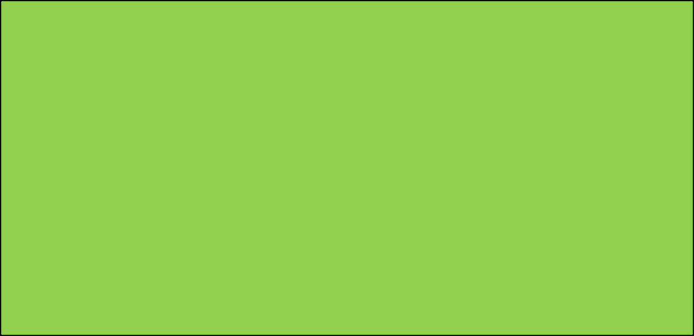
Figura 37 - Agregar joven investigador indeterminado- Presione BUSCAR GRUPO, digite el nombre del grupo, presione BUSCAR, luego AGREGAR y seleccione el grupo requerido.
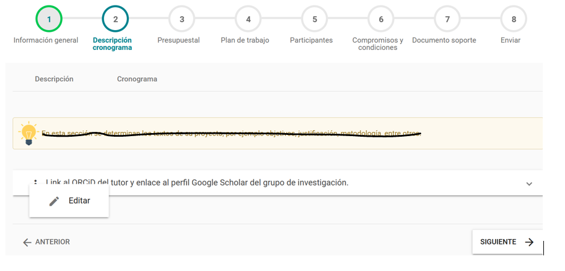
Figura 38 - Agregar grupo al JI- En Rol seleccione únicamente “Joven Investigador”.
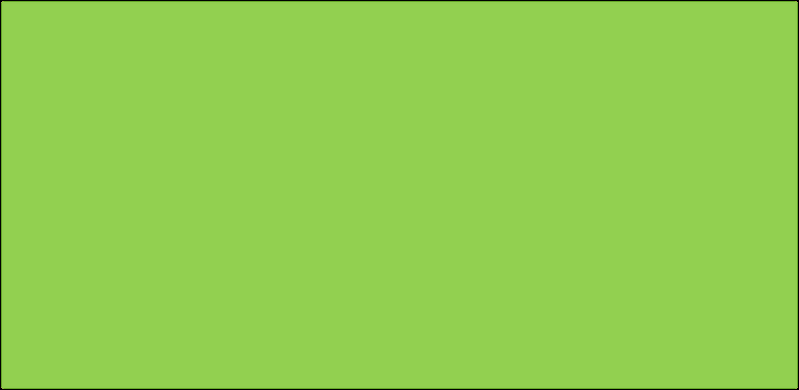
Figura 39 - Rol Joven Investigador- Seleccione la Facultad y el programa académico tentativo del estudiante. (Si se aprueba el cupo, podrá modificarse más adelante).
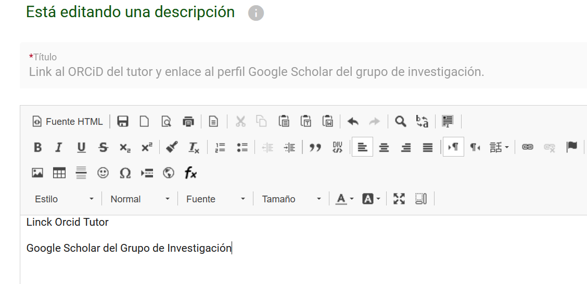
Figura 40 - Facultad y programa del JI- En dedicación semanal registre entre 10 y 16 horas durante 12 meses.
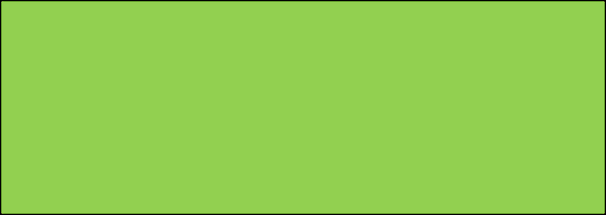
Figura 41 - Horas dedicación del JI- En los campos Función y Observaciones digite
Joven investigador. Presione AGREGAR PARTICIPANTE.
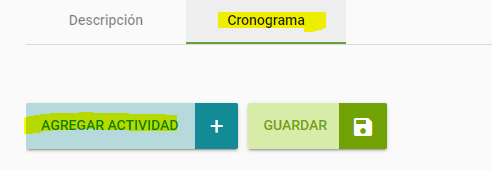
Figura 42 - Campo Función y observaciones del JI- Presione GUARDAR y valide el resumen con ambos participantes registrados.
Figura 43 - Resumen de participantes del cupo
3.2.8. Compromisos y Condiciones
Contiene dos subpestañas: Compromisos y Condiciones formales.
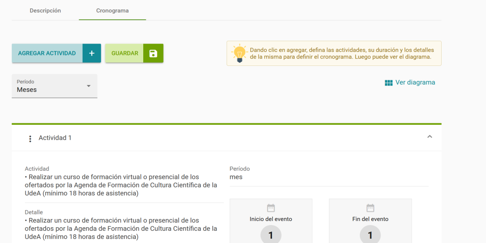
Figura 44 - Compromisos y condicionesSubpestaña Compromisos
Aparece el listado de compromisos obligatorios acordes a los términos de referencia. El ingreso de comentarios es opcional. Presione GUARDAR.
Figura 45 - Compromisos definidos
Subpestaña Condiciones formales
Se listan los requisitos que se deben cumplir al presentar la solicitud del cupo.
Criterio de Eliminación Directa
Debe seleccionar la palabra “Cumple” en cada una de las condiciones formales; de lo contrario, el cupo queda automáticamente rechazado.
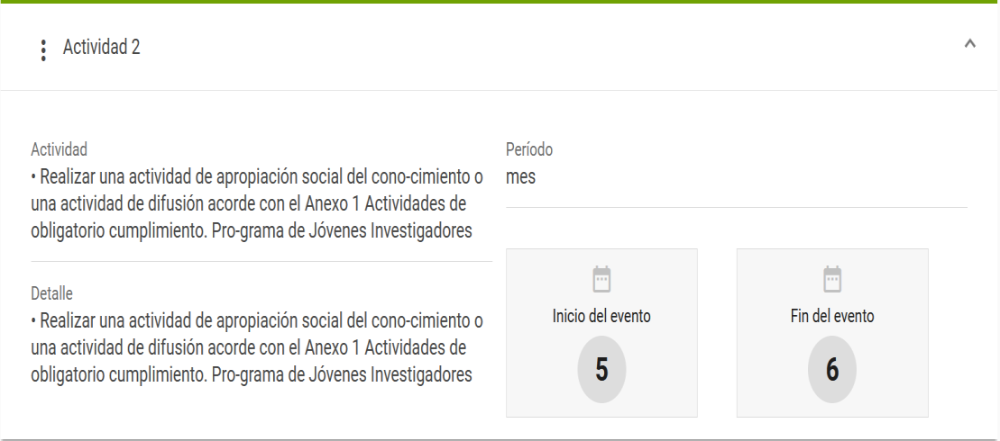
Figura 46 - Condiciones formalesPresione el botón GUARDAR y luego SIGUIENTE.
3.2.9. Pestaña Documento Soporte y Envío
- Documento Soporte: En este trámite NO SE REQUIERE SUBIR NINGÚN TIPO DE DOCUMENTO. Presione directamente el botón SIGUIENTE.
Figura 47 - Documento Soporte
- Pestaña Enviar: Presione el botón Enviar a Centro.
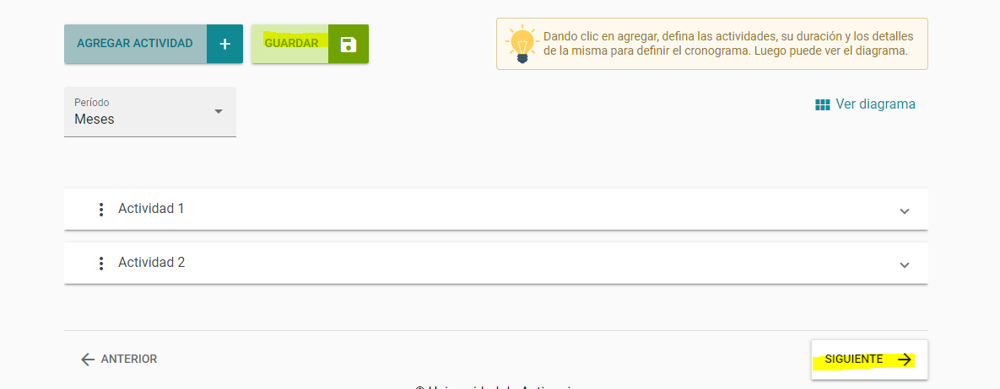
Figura 48 - Pestaña Enviar- Aparece cuadro de confirmación: “¿Realmente desea enviar el proyecto?”. Presione ACEPTAR.
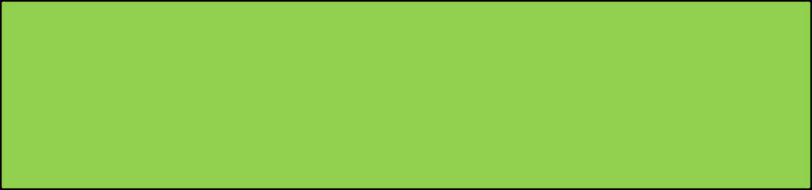
Figura 49 - Confirmación envío del cupo- El sistema notifica que el proyecto ha sido enviado y queda en estado Matriculado, garantizando su radicación formal ante la Vicerrectoría de Investigación. Presione ACEPTAR.
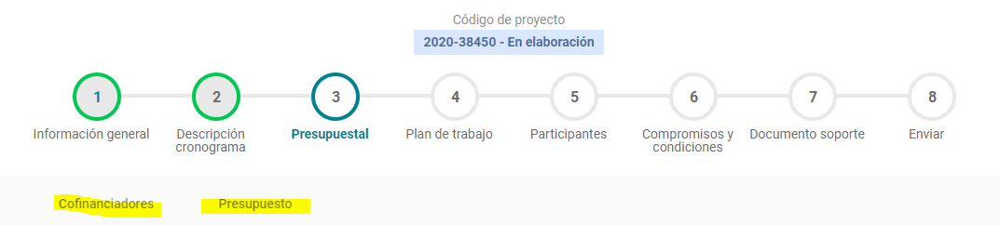
Figura 50 - Cupo recibido por la VRI4. Nota de cambio
- No aplica para la primera versión.
Registro de Control y Firmas
| Rol | Nombre | Cargo / Dependencia | Fecha |
|---|---|---|---|
| Elaboró | Sandra Patricia Zabala Orrego | Contratista | 16-FEB-2024 |
| Elaboró | Lina María Ospina Pérez | Product Owner SIIU, Vicerrectoría de Investigación | 16-FEB-2024 |
| Revisó | Kerlin Yohana Bedoya Agudelo | Analista de Procesos, División de Arquitectura de Procesos | 12-MAR-2024 |
| Revisó | Julio César García Castrillón | Analista de Procesos, División de Arquitectura de Procesos | 12-MAR-2024 |
| Aprobó | Gloria Valencia Bustamante | Asistente, Vicerrectoría de Investigación | 13-MAR-2024 |